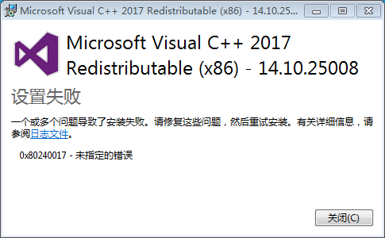

问题描述
有些用户反映在使用yaahp过程中, 计算排序权重时会出现软件异常退出的问题, 这个问题一般都是因为Visual C++ 2017运行时未正常安装引起的.
yaahp为什么需要Visual C++运行时?
为了提高计算效率，yaahp中一些耗时的算法使用C/C++编写(例如判断矩阵自动修正、自动补全等), 这部分代码执行需要微软的Visual C++ 2017运行时正确安装.
yaahp的安装程序会在安装时自动安装所需的Visual C++ 运行时，但是也有可能由于不满足安装条件, 或与系统中已安装的软件冲突而安装失败.如果Visual C++运行时安装失败, 那么执行这些C/C++编写的算法将会导致yaahp异常退出.
手动安装Visual C++ 2017运行时解决此问题
首先下载Visual C++ Redistributable for Visual Studio 2017.
将下载的vc_redist_x86.zip文件解压后得到安装程序”vc_redist_x86.exe”. 执行安装程序, 如果安装成功(如下图), 该问题解决.
如果安装失败(如下图), 请参考下一节内容.
Windows版本
Visual C++ 2017运行时支持的操作系统如下:
Windows 10(1507 版或更高版本), Windows 7 Service Pack 1, Windows 8.1
Windows Server 2003 Service Pack 2, Windows Server 2008 R2 SP1
Windows Server 2008 Service Pack 2, Windows Server 2012
Windows Vista Service Pack 2, Windows XP Service Pack 3
所以, 如果电脑上的Windows版本(并打相应的补丁包)不在这个列表中, 将无法成功安装Visual C++ 2017运行时, 导致yaahp执行计算时失败.
以Windows 7为例说明解决办法
查看系统信息, 发现系统为未打Service Pack1的Windows 7, 如下图所示:
下载Windows 7 Service Pack1, 如果是32位系统, 下载windows6.1-KB976932-X86.exe; 如果是64位系统, 下载windows6.1-KB976932-X64.exe.
安装后查看系统信息, 如下图.
然后再次安装Visual C++ 2017运行时, 安装成功, 如下图.
启动yaahp, 如果没有其他问题, 既可以正常进行计算了.